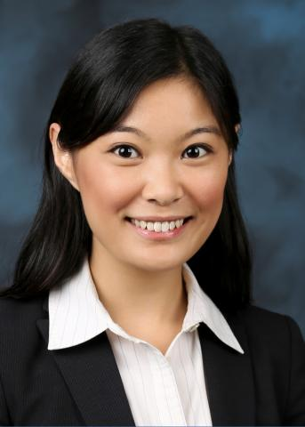
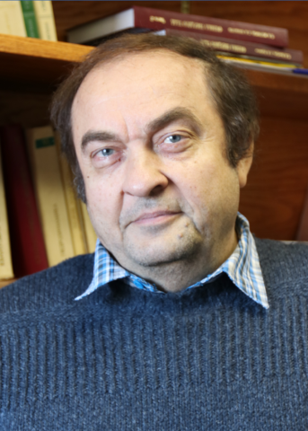
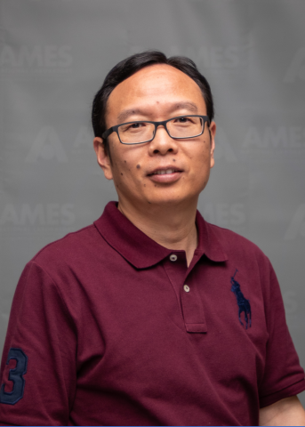
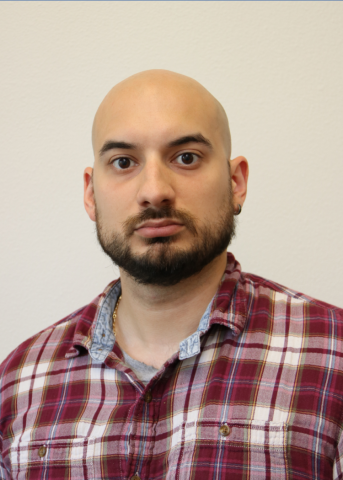
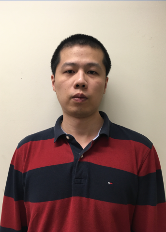
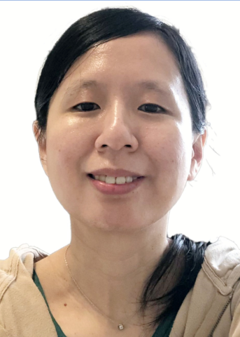

Lead PI
Cai-Zhuang Wang
Distinguished Scientist
Ames National Laboratory
Leads the MLAMD Center and coordinates the integrated effort across AI/ML-guided discovery, exascale workflow development, materials theory, and synthesis-pathway prediction.
 MLAMD Center
AI/ML + exascale computing
MLAMD Center
AI/ML + exascale computing
People
MLAMD brings together scientists from Ames National Laboratory and Los Alamos National Laboratory with complementary expertise in AI/ML, materials theory, atomistic simulation, workflow software, and high-performance computing.
Project team
Principal Investigator
Lead PI
Distinguished Scientist
Ames National Laboratory
Leads the MLAMD Center and coordinates the integrated effort across AI/ML-guided discovery, exascale workflow development, materials theory, and synthesis-pathway prediction.
Co-PIs

PI and Thrust 1 leader
Scientist
Los Alamos National Laboratory
Leads the exa-AMD thrust on scalable AI/ML-assisted materials discovery and workflow execution.
PI and Thrust 2 leader
Scientist II
Ames National Laboratory
Leads the exa-PD thrust on exascale phase-diagram construction and computational synthesis pathways.

PI
Senior Scientist
Ames National Laboratory
Contributes senior scientific leadership in magnetic materials theory and first-principles modeling.

PI
Scientist III
Ames National Laboratory
Supports the center's computational materials science, first-principles validation, and theory-driven modeling.

PI
Scientist II
Ames National Laboratory
Contributes project leadership and computational science expertise across software, data, and workflow objectives.
Key Personnel

Key person | exa-AMD
Scientist I
Ames National Laboratory
Develops and applies exa-AMD workflows for AI/ML-guided discovery of magnetic and functional materials.

Key person | Project PI role
Scientist I
Ames National Laboratory
Contributes to computational materials modeling, workflow development, and center research integration.
Key person | exa-AMD software
Research Scientist
Los Alamos National Laboratory
Supports scalable software implementation and high-performance workflow execution for exa-AMD.
Research Team
Postdoctoral researcher
Postdoc
Ames National Laboratory
Contributes to project research, workflow development, and scientific applications across the center.
Graduate researcher
Graduate student
Iowa State University
Supports project research and computational materials workflows as part of the center team.
Advisory structure
Internal Oversight Committee
External Advisory Committee